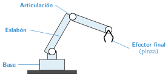

Robots industriales y robots en la agricultura
🤔 Pienso5 min
Qué hago aquí: Piensa un momento y contesta con lo que ya sabes. No pasa nada si no lo sabes: es para empezar.
Coge un lápiz y llévalo al estuche. ¿Qué partes de tu brazo has movido?
📖 Leo y aprendo20 min
Qué hago aquí: Lee despacio, mira los dibujos y los ejemplos, y quédate con la idea clave del final.
Un brazo robótico se parece mucho a nuestro brazo.

En el campo también hay robots:
- Robots de ordeño: la vaca entra cuando quiere y el robot la ordeña. Hay muchos en Cantabria.
- Tractores autónomos: aran solos, guiados por GPS.
- Drones: hacen fotos de los cultivos para ver qué zonas necesitan agua.
✏️ Hago20 min
Qué hago aquí: Haz las actividades en orden. Empieza siempre por las básicas.
Escribe las cuatro partes de un brazo robótico.
Une cada parte del robot con una parte de tu cuerpo.
| Articulación • | • Mano |
| Eslabón • | • Codo |
| Efector final • | • Antebrazo |
Escribe un robot que se use en el campo y qué hace.
¿Qué herramienta pondrías en la punta de un brazo para: a) coger fresas; b) mover cristales; c) pintar?
✏️ Puedes responder escribiendo, con un dibujo o un esquema, o contándolo en voz alta.
🚀 Amplío (si quieres saber más)
Qué hago aquí: ¿Has terminado? Lee la curiosidad o elige el reto. Es voluntario.
Cuenta las articulaciones del brazo del dibujo. ¿Cuántos grados de libertad tiene?
✅ Compruebo5 min
Qué hago aquí: Contesta sin mirar la ficha y marca cómo lo llevas.